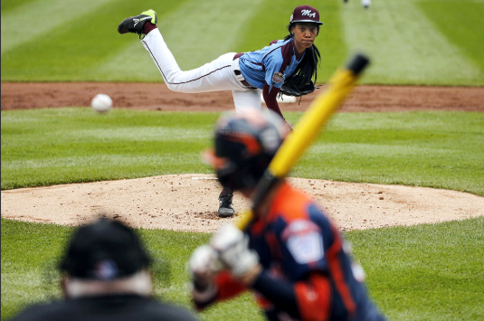

“I throw 70 miles an hour. That’s throwing like a girl.” - Mo’ne Davis

During the summer of 2014, thirteen year old Mon’ne Davis becomes the first girl to picth a complete-game shutout in the Little League World Series in Williamsport.
19.1 Introduction
Ranking teams or individual athletes is a fundamental task in sports analytics. From high school leagues to professional competitions, stakeholders use rankings to determine standings, qualify for playoffs, and even allocate resources. Rankings become particularly important when not every participant faces every other participant—a common occurrence in real-world sports.
In this chapter, we will introduce a series of methods for ranking competitors, starting with basic win percentage calculations and moving toward more sophisticated methods like Massey Rankings. We will use real sports data and implement these methods in R, primarily leveraging the comperank library, along with standard functions from dplyr and tidyverse. Both cases—full round-robins and partial schedules—will be illustrated.
19.2 Win Percentage Ranking
19.2.1 Concept
The simplest method for ranking teams or players is the win percentage:
\[
\text{Win Percentage} = \frac{\text{Number of Wins}}{\text{Number of Games Played}}
\]
This method assumes that all wins are equally valuable, regardless of opponent strength.
19.2.2 Example: Full Round Robin — Tennis Tournament
Suppose we have six tennis players who each play every other player exactly once. We simulate the data:
# A tibble: 6 × 4
player games_played wins win_pct
<fct> <int> <int> <dbl>
1 E 10 7 0.7
2 B 10 6 0.6
3 F 10 5 0.5
4 A 10 4 0.4
5 C 10 4 0.4
6 D 10 4 0.4
Notes:
Because it’s a full round-robin, every player faces each opponent exactly once.
Win percentage gives a fair but simplistic view.
19.3 Points-Based Systems
19.3.1 Concept
Some sports (e.g., soccer) use a points system rather than simple win counts. For example:
Win = 3 points
Draw = 1 point
Loss = 0 points
The total points determine the ranking.
19.3.2 Example: Soccer Mini-League
# Simulate soccer-like match resultsmatches=matches|>mutate( outcome =sample(c("win", "draw", "loss"), n(), replace =TRUE, prob =c(0.6, 0.2, 0.2)), points_player1 =case_when(outcome=="win"&player1==winner~3,outcome=="win"&player2==winner~0,outcome=="draw"~1,TRUE~0), points_player2 =case_when(outcome=="win"&player2==winner~3,outcome=="win"&player1==winner~0,outcome=="draw"~1,TRUE~0))# Now gather points for both playerspoints_table=matches|>select(player1, player2, points_player1, points_player2)|>pivot_longer( cols =c(player1, player2), names_to ="role", values_to ="player")|>mutate(points =ifelse(role=="player1", points_player1, points_player2))|>group_by(player)|>summarize(total_points =sum(points))|>arrange(desc(total_points))print(points_table)
# A tibble: 6 × 2
player total_points
<fct> <dbl>
1 E 18
2 F 14
3 B 13
4 C 13
5 A 8
6 D 5
Notes:
Points systems are common for handling tied games.
They incentivize wins over draws.
19.4 Colley Matrix Rankings
19.4.1 Concept
The Colley method is a linear algebra-based system designed for situations where not everyone plays everyone else. It adjusts for strength of schedule.
The Colley Matrix \(C\) and vector \(b\) are constructed as follows:
\(C_{ii} = 2 + \text{Number of games played}\)
\(C_{ij} = - \text{Number of games between } i \text{ and } j\)
Useful for leagues where participants play unequal numbers of games.
Automatically adjusts for the strength of the schedule.
19.5 Massey Rankings
19.5.1 Concept
The Massey method is another matrix-based method but uses point margins instead of binary win/loss results. It is particularly popular in football analytics.
The Massey Matrix \(M\) and vector \(p\) are constructed based on:
Point differential between teams
Number of games played
Solving \(M \mathbf{r} = \mathbf{p}\) yields the rankings.
Massey Rankings are widely respected for American football, college sports, and other score-based competitions.
19.6 Challenges and Considerations
19.6.1 Unequal Schedules
When teams or individuals do not face all others equally:
Simple win percentages can be misleading.
Points-based systems and matrix methods (Colley, Massey) offer better adjustments.
19.6.2 Blowout Wins
Should winning by 40 points matter more than winning by 1 point? Massey rankings incorporate margin of victory; Colley does not.
19.6.3 Strength of Opponents
Advanced systems adjust for opponent strength implicitly (Massey, Colley) or explicitly (Elo ratings, which we will discuss later).
19.7 Case Study: NCAA Football Rankings Using the Colley and Massey Methods
College football provides an ideal example for ranking teams when the schedule is incomplete and unbalanced. Teams play only a subset of other teams, and opponent strength varies greatly.
We will use the cfbdfastR package to obtain actual college football game results.
19.7.1 Step 1: Load and Prepare Data
Note that cfdbfastR requires an API key to download the data. Run the code ?register_cfbd for details.
# A tibble: 6 × 4
home_team away_team home_points away_points
<chr> <chr> <int> <int>
1 Notre Dame Navy 42 3
2 Jacksonville State UTEP 17 14
3 San Diego State Ohio 20 13
4 New Mexico State Massachusetts 30 41
5 Vanderbilt Hawai'i 35 28
6 USC San José State 56 28
19.7.2 Step 2: Construct the Match Results
We need to reformat this data to be used by comperank.
# Create long format for comperankmatches=games|>mutate(game =row_number())|>pivot_longer(cols =c(home_team, away_team, home_points, away_points), names_to =c("location", ".value"), names_sep ="_")|>rename(player =team, score =points)|>select(game, player, score)head(matches)
# A tibble: 6 × 3
game player score
<int> <chr> <int>
1 1 Notre Dame 42
2 1 Navy 3
3 2 Jacksonville State 17
4 2 UTEP 14
5 3 San Diego State 20
6 3 Ohio 13
19.7.3 Step 3: Apply the Colley and Massey Rankings
# A tibble: 229 × 2
player ranking_colley
<chr> <dbl>
1 Abilene Christian 207
2 Air Force 47
3 Akron 228
4 Alabama 3
5 Alabama A&M 203
6 Alcorn State 199
7 App State 51
8 Arizona 22
9 Arizona State 111
10 Arkansas 108
# ℹ 219 more rows
# A tibble: 229 × 2
player ranking_colley
<chr> <dbl>
1 Washington 1
2 Michigan 2
3 Alabama 3
4 Florida State 4
5 Texas 5
6 Ohio State 6
7 Georgia 7
8 Oregon 8
9 Penn State 9
10 James Madison 10
# ℹ 219 more rows